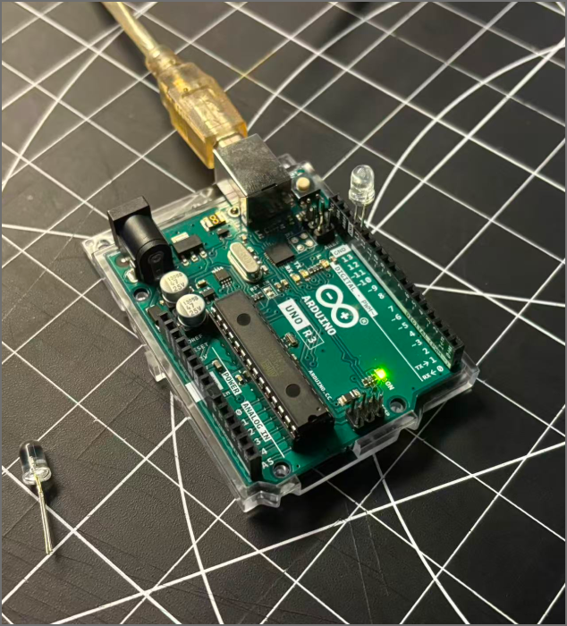
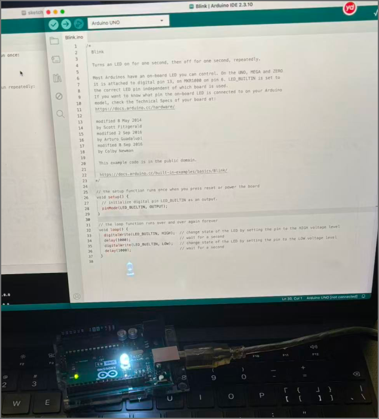

Physical Computing
Weekly Activity Template
Ziqi Zhou
Module 1
Activity Research
In Activity 1, I made my first attempt to use the Blink sample application for Arduino to see the full flow from code compilation to uploading to an onboard LED blink.
In Activity 2, I primarily explored how to connect an Arduino to ProtoPie Connect so that data from physical sensors could influence the digital interface. By collecting sensor data via the Arduino and then using ProtoPie Connect to transmit that data to the interactive prototype, I was able to achieve real-time interaction between physical inputs and the digital interface. This activity gave me a deeper understanding of how hardware, data, and UI/UX prototypes are connected and work together.
In this activity 3, I connected Arduino to TouchDesigner and used a potentiometer to control a circular visual effect in real time. I explored how sensor data can be transferred through serial communication and used to change digital visuals. I learned how to check Arduino data, connect basic TouchDesigner nodes, and adjust visual parameters. This helped me understand how physical inputs can create interactive visual experiences.
Activity 1






![My idea is for participants to cover the Arduino light sensor with one hand to gradually reveal the glowing fish, while moving their other hand for the computer’s built-in camera to track. This movement guides the leader fish, while the other fish follow. The computer, Arduino and projector are placed on the same table, with TouchDesigner processing the visuals and projecting them onto the wall. This image was generated with AI assistance based on my ideas to illustrate the planned setup and interaction. The actual setup and effects still need to be tested.](images/Concept/13.png)